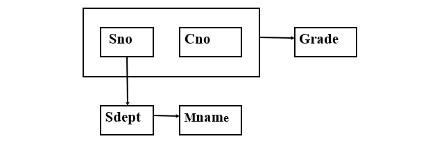
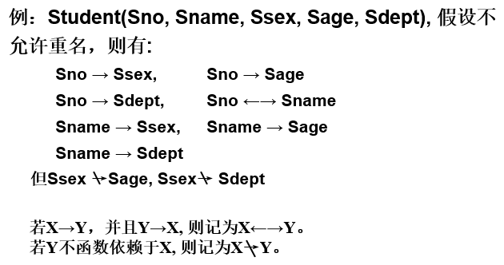
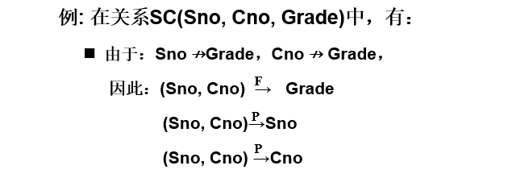
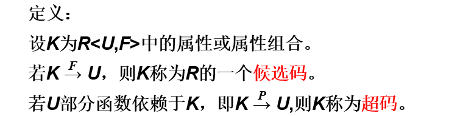
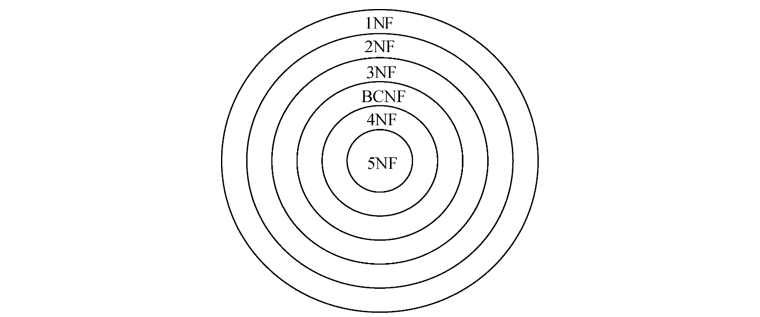
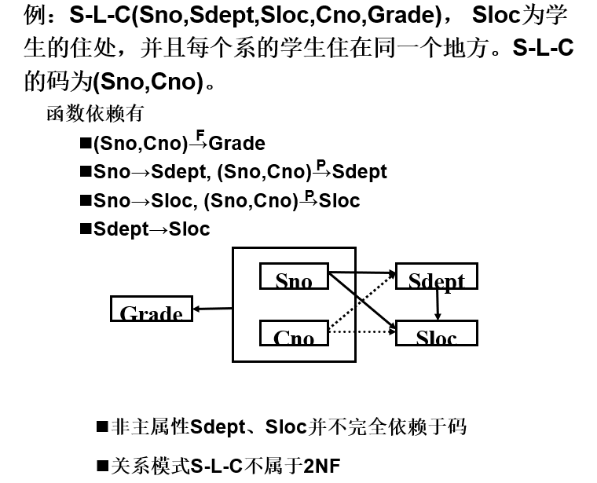
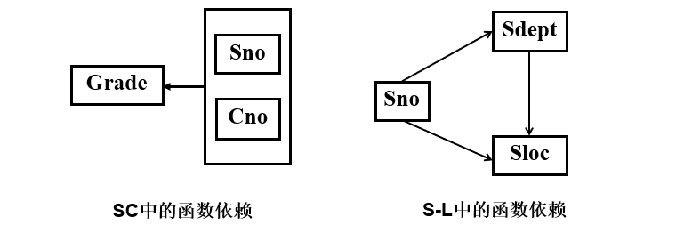
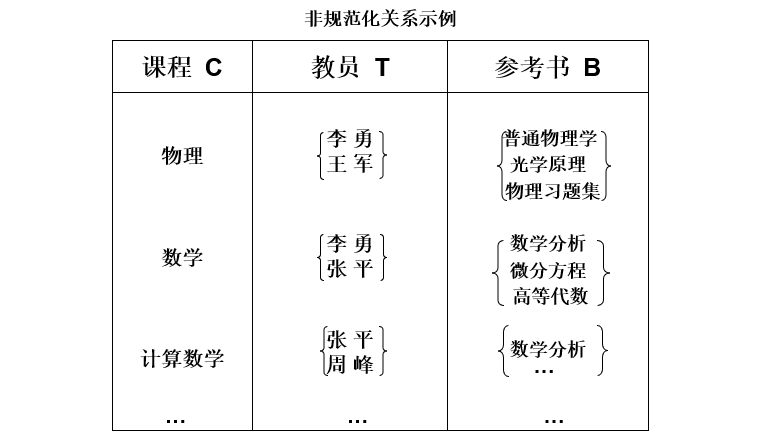
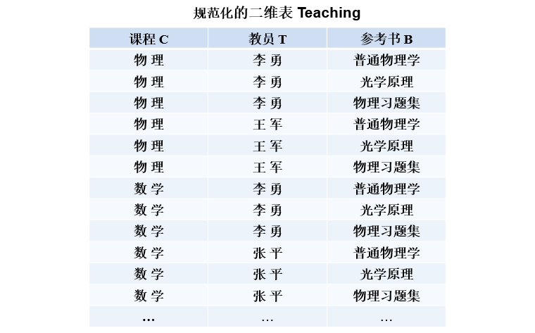
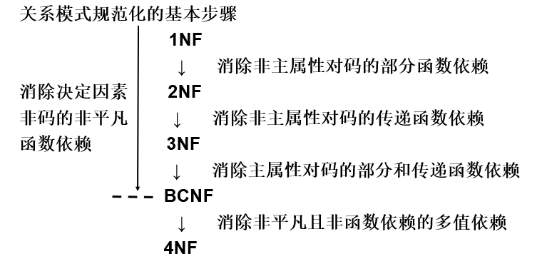

好的关系模式
关系模式由五部分组成，是一个五元组： R(U, D, DOM, F)
- 关系名R是符号化的元组语义
- U为一组属性
- D为属性组U中的属性所来自的域
- DOM为属性到域的映射
- F为属性组U上的一组数据依赖
由于D、DOM与模式设计关系不大，因此在本章中把关系模式看作一个三元组：R<U, F>。
作为二维表，关系要符合一个最基本的条件：每个分量必须是不可分开的数据项。满足了这个条件的关系模式就属于第一范式（1NF）。
数据依赖：
- 是一个关系内部属性与属性之间的一种约束关系
- 通过属性间值的相等与否体现出来的数据间相互联系
- 是现实世界属性间相互联系的抽象
- 是数据内在的性质
- 是语义的体现
数据依赖的主要类型：
- 函数依赖（Functional Dependency，简记为FD）
- 多值依赖（Multi-Valued Dependency，简记为MVD）
函数依赖普遍存在于现实生活中。
例如，一个学号只对应一个学生，一个学生只在一个系中学习，“学号”值确定后，学生的姓名及所在系的值就被唯一确定。Sname=f(Sno)，Sdept=f(Sno)，即Sno函数决定Sname，Sno函数决定Sdept，记作Sno→Sname，Sno→Sdept。
例：
建立一个描述学校教务的数据库。涉及的对象包括：学号（Sno），所在系（Sdept），系主任姓名（Mname），课程号（Cno），成绩（Grade）
假设学校教务的数据库模式用一个单一的关系模式Student来表示，则该关系模式的属性集合为：U={Sno, Sdept, Mname, Cno, Grade}
现实世界的已知事实（语义）：一个系有若干学生， 但一个学生只属于一个系；一个系只有一名（正职）负责人；一个学生可以选修多门课程，每门课程有若干学生选修；每个学生学习每一门课程有一个成绩。
由此可得到属性组U上的一组函数依赖F：F={Sno→Sdept, Sdept→ Mname, (Sno, Cno)→ Grade}

上面例子中的关系模式存在一些问题：
-
数据冗余
浪费大量的存储空间。
每一个系主任的姓名重复出现，重复次数与该系所有学生的所有课程成绩出现次数相同。
-
更新异常
数据冗余 ，更新数据时，维护数据完整性代价大。
某系更换系主任后，必须修改与该系学生有关的每一个元组。
-
插入异常
如果一个系刚成立，尚无学生，则无法把这个系及其系主任的信息存入数据库。
-
删除异常 如果某个系的学生全部毕业了， 则在删除该系学生信息的同时，把这个系及其系主任的信息也丢掉了。
以上这些问题都是由模式中的某些数据依赖引起的。
很明显上面的关系模式不是一个好的模式。一个“好”的模式应当不会发生插入异常、删除异常和更新异常而且数据冗余应尽可能少。
改造一个不好的模式，应该用规范化理论改造关系模式来消除其中不合适的数据依赖。
规范化
函数依赖
定义：设R(U)是一个属性集U上的关系模式，X和Y是U的子集。若对于R(U)的任意一个可能的关系r，r 中不可能存在两个元组在X上的属性值相等， 而在Y上的属性值不等， 则称“X函数确定Y”或“Y函数依赖于X”，记作。

函数依赖不是指关系模式R的某个或某些关系实例满足的约束条件，而是指R的所有关系实例均要满足的约束条件。
函数依赖是语义范畴的概念，只能根据数据的语义来确定一个函数依赖。
常用术语和记号：
- ，但则称是非平凡的函数依赖。
- ，但则称是平凡的函数依赖。
- 若，则X称为这个函数依赖的决定因素。
- 若，，则记作。
- 若Y不函数依赖于X，则记作。
::: tip
对于任一关系模式，平凡函数依赖都是必然成立的，它不反映新的语义。若不特别声明， 我们总是讨论非平凡函数依赖。
:::
定义：在R(U)中，
- 若，并且对于X的任何一个真子集X’, 都有 ，则称Y对X完全函数依赖，记作。
- 若，但Y不完全函数依赖于X，则称Y对X部分函数依赖，记作。

定义：在R(U)中，如果，，，，则称Z对X传递函数依赖，记为：X → Z。 注：如果，即，则Z直接依赖于X，而不是传递函数依赖。
例：
在关系Std(Sno, Sdept, Mname)中，有：Sno → Sdept，Sdept → Mname，则Mname传递函数依赖于Sno。
码

候选码是最小的超码，即K的任意一个真子集都不是候选码。
若关系模式R有多个候选码，则选定其中的一个做为主码。
包含在任何一个候选码中的属性 ，称为主属性；不包含在任何码中的属性称为非主属性或非码属性。
整个属性组是码，则称为全码。
关系模式R中属性或属性组X并非R的码，但X是另一个关系模式的码，则称X是R的外部码也称外码。
主码与外部码一起提供了表示关系间联系的手段。
范式
范式是符合某一种级别的关系模式的集合。
关系数据库中的关系必须满足一定的要求。满足不同程度要求的为不同范式。范式的种类：
- 第一范式(1NF)
- 第二范式(2NF)
- 第三范式(3NF)
- BC范式(BCNF)
- 第四范式(4NF)
- 第五范式(5NF)
各种范式之间存在联系：
某一关系模式R为第n范式，可简记为。
一个低一级范式的关系模式，通过模式分解可以转换为若干个高一级范式的关系模式的集合，这种过程就叫规范化。

2NF
若关系模式，并且每一个非主属性都完全函数依赖于任何一个候选码，则。

以上面问题为例，一个关系模式不属于2NF，会产生以下问题：
-
插入异常
如果插入一个新学生，但该生未选课，即该生无Cno，由于插入元组时，必须给定码值，因此插入失败。
-
删除异常
如果S4只选了一门课C3，现在他不再选这门课，则删除C3后，整个元组的其他信息也被删除了。
-
修改复杂
如果一个学生选了多门课，则Sdept，Sloc被存储了多次。如果该生转系，则需要修改所有相关的Sdept和Sloc，造成修改的复杂化。
出现这种问题的原因是例子中有两类非主属性：一类如Grade，它对码完全函数依赖；另一类如Sdept、Sloc，它们对码不是完全函数依赖。
解决方法：用投影分解把关系模式S-L-C分解成两个关系模式，SC(Sno,Cno,Grade)和S-L(Sno,Sdept,Sloc)。此时SC的码为(Sno,Cno)，SL的码为Sno，这样使得非主属性对码都是完全函数依赖了。

3NF
设关系模式，若R中不存在这样的码X、属性组Y及非主属性，使得，成立，不成立，则称。
BCNF
设关系模式，若且时X必含有码，则。
换言之，在关系模式中，如果每一个决定属性集都包含候选码，则。
BCNF的关系模式所具有的性质
- 所有非主属性都完全函数依赖于每个候选码
- 所有主属性都完全函数依赖于每个不包含它的候选码
- 没有任何属性完全函数依赖于非码的任何一组属性
如果一个关系数据库中的所有关系模式都属于BCNF，那么在函数依赖范畴内，它已实现了模式的彻底分解，达到了最高的规范化程度，消除了插入异常和删除异常。
例1：关系模式SJP(S,J,P)中，S是学生，J表示 课程，P表示名次。每一个学生选修每门课程的成绩有一定的名次，每门课程中每一名次只有一个学生（即没有并列名次）。
由语义可得到函数依赖： ，。所以与都可以作为候选码。 关系模式中没有属性对码传递依赖或部分依赖，所以。除与以外没有其他决定因素，所以。
例2：关系模式STJ(S,T,J)中，S表示学生，T表示教师，J表示课程。每一教师只教一门课。每门课有若干教师，某一学生选定某门课，就对应一个固定的教师。
由语义可得到函数依赖：，，
因为没有任何非主属性对码传递依赖或部分依赖，所以。因为T是决定因素，而T不包含码，所以关系。
多值依赖
设学校中某一门课程由多个教师讲授，他们使用相同的一套参考书。每个教员可以讲授多门课程，每种参考书可以供多门课程使用。
用关系模式Teaching(C,T,B)来表示课程C、教师T和参考书B之间的关系。


Teaching具有唯一候选码(C,T,B)， 即全码，因而 。
存在问题：
- 数据冗余度大：有多少名任课教师，参考书就要存储多少次。
- 增加操作复杂：当某一课程增加一名任课教师时，该课程有多少本参照书，就必须插入多少个元组。
- 删除操作复杂：某一门课要去掉一本参考书，该课程有多少名教师，就必须删除多少个元组
- 修改操作复杂：某一门课要修改一本参考书，该课程有多少名教师，就必须修改多少个元组。
问题产生原因：存在多值依赖
定义：设R(U)是属性集U上的一个关系模式。X,Y,Z是U的子集，并且Z=U-X-Y。关系模式R(U)中多值依赖成立，当且仅当对R(U)的任一关系r，给定的一对(x,z)值，有一组Y的值，这组值仅仅决定于x值而与z值无关。
若，而，即Z为空，则称为平凡的多值依赖。否则称为非平凡的多值依赖。
多值依赖的性质：
- 多值依赖具有对称性。
- 多值依赖具有传递性。
- 函数依赖是多值依赖的特殊情况。
- 若X→→Y，X→→Z，则X→→YZ。
- 若X→→Y，X→→Z，则X→→Y∩Z。
- 若X→→Y，X→→Z，则X→→Y-Z，X→→Z -Y。
4NF
定义：关系模式，如果对于R的每个非平凡多值依赖X→→Y（Y ⊈ X），X都含有码，则R<U,F>∈4NF。
4NF就是限制关系模式的属性之间不允许有非平凡且非函数依赖的多值依赖。4NF所允许的非平凡多值依赖实际上是函数依赖。
如果一个关系模式是4NF， 则必为BCNF。
小结
在关系数据库中，对关系模式的基本要求是满足第一范式。
规范化程度过低的关系不一定能够很好地描述现实世界，可能存在插入异常、删除异常、修改复杂、数据冗余等问题。解决方法就是对其进行规范化，转换成高级范式。
一个低一级范式的关系模式，通过模式分解可以转换为若干个高一级范式的关系模式集合，这种过程就叫关系模式的规范化。关系数据库的规范化理论是数据库逻辑设计的工具。

不能说规范化程度越高的关系模式就越好。必须对现实世界的实际情况和用户应用需求作进一步分析，确定一个合适的、能够反映现实世界的模式。
数据依赖的公理系统
数据依赖的公理系统是模式分解算法的理论基础。
对于满足一组函数依赖F的关系模式 R <U,F>，其任何一个关系r，若函数依赖X→Y都成立（即r中任意两元组t、s，若t[X]=s[X]，则 t[Y]=s[Y]），则称F逻辑蕴涵X →Y。
Armstrong公理系统：一套推理规则，是模式分解算法的理论基础
用途：
- 求给定关系模式的码
- 从一组函数依赖求得蕴涵的函数依赖
Armstrong公理系统，设U为属性集总体，F是U上的一组函数依赖， 于是有关系模式R <U,F >。对R <U,F> 来说有以下的推理规则：
- A1 自反律（reflexivity rule）：若Y X U，则X →Y 为F所蕴涵。
- A2 增广律（augmentation rule）：若X→Y为F所蕴涵，且Z U，则XZ→YZ 为F所蕴涵。
- A3 传递律（transitivity rule）：若X→Y及Y→Z为F所蕴涵，则X→Z 为F所蕴涵。
::: tip
由自反律所得到的函数依赖均是平凡的函数依赖，自反律的使用并不依赖于F。
:::
根据A1，A2，A3这三条推理规则可以得到下面三条推理规则：
- 合并规则：由X→Y，X→Z，有X→YZ。
- 伪传递规则：由X→Y，WY→Z，有XW→Z。
- 分解规则：由X→Y及ZY，有X→Z。